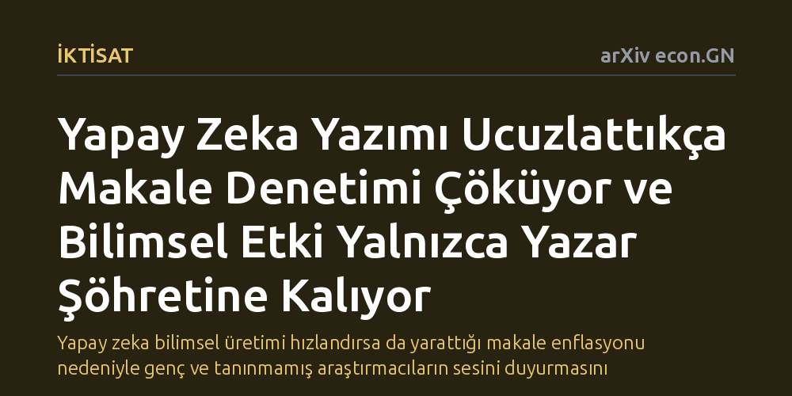

IKTISAT · arXiv econ.GN · 2026-10-27
Yapay zekanın akademik makale yazımını ucuzlatmasının hakem denetimi ve okuma süreçlerine etkisi teorik bir iktisadi modelle incelendi. Yazım maliyeti sıfıra yaklaştıkça denetlenen makale oranının sıfırlandığı, etkinin yalnızca yazar şöhretine dayandığı ve ortak yapay zeka kullanımının hataları kalıcılaştırdığı saptandı.
Yapay zeka bilimsel üretimi hızlandırsa da yarattığı makale enflasyonu nedeniyle genç ve tanınmamış araştırmacıların sesini duyurmasını neredeyse imkansız kılabilir.

Üretken yapay zeka araçları metin oluşturmayı, veri taslaklarını toparlamayı ve akademik makale kaleme almayı daha önce görülmemiş ölçüde kolaylaştırdı. Ancak bir makaleyi yazmanın maliyeti neredeyse sıfıra yaklaşırken, o makaleyi okumak, iddialarını sınamak ve metodolojisini doğrulamak hâlâ insan beyninin sınırlı zamanına ve dikkatine muhtaç. Bu asimetri, bilim dünyasını eşi benzeri görülmemiş bir yayın tsunamisiyle karşı karşıya bırakıyor.
Hakemlerin ve araştırmacıların günde ayırabilecekleri saat sayısı değişmezken, önlerine yığılan metin sayısı katlanarak artıyor. Ortaya çıkan bu dengesizlik sadece bir zaman yönetimi meselesi değil; bilimin kalbinde yer alan hakemlik ve denetim mekanizmasının temelden sarsılması anlamına geliyor. Eğer yazmak bedava ama okumak çok pahalıysa, sistem hangi makalelerin okunacağına ve hangilerinin ciddiye alınacağına nasıl karar verecek?
İktisatçı Wolfgang Kuhle, bu soruyu yanıtlamak için deneysel bir saha araştırması yerine mikroiktisat ve oyun teorisi ilkelerine dayanan matematiksel bir denge modeli kuruyor. Modelde iki temel aktör grubu bulunuyor: Farklı akademik tanınırlığa ve geçmiş başarı geçmişine sahip yazarlar ile zamanı katı bir şekilde kısıtlı olan okurlar ve hakemler.
Zamanı yetersiz olan bir hakemin gelen her makale için üç seçeneği vardır: Makaleyi tamamen görmezden gelmek, zaman ayırıp iddialarını adım adım doğrulamak veya yazarın adına güvenip metni peşinen doğru kabul etmek. Çalışma, yapay zekanın yazma maliyetlerini okuma maliyetinden çok daha hızlı düşürdüğü bir dünyada, hakemlerin ve okurların rasyonel stratejilerinin nasıl değiştiğini matematiksel sınır analiziyle modelliyor.
Modelin ortaya koyduğu temel bulgu oldukça çarpıcı: Yazma maliyetleri düştükçe, hakemlerin bizzat inceleyip doğruladığı makalelerin oranı hızla daralıyor. Yazının maliyetsiz hale geldiği sınır durumda ise bizzat doğrulanan makalelerin payı tamamen sıfıra iniyor. Hakemler ya da okurlar artık metnin içeriğini satır satır denetleyecek zamana sahip olamıyor.
Bu koşullar altında akademik etkinin tek belirleyicisi yazarın önceki şöhreti haline geliyor. Bilim dünyasında tanınmış ve güçlü bir konuma sahip olan kıdemli araştırmacıların makaleleri doğrudan güvenilerek kabul edilirken, henüz kendini kanıtlamamış genç veya bağımsız araştırmacıların çalışmaları incelenmeksizin doğrudan göz ardı ediliyor. Böylece makalenin kalitesi değil, yazarın kurumsal etiketi belirleyici oluyor.
Araştırmacılar makale selinden kaçmak ve zamandan tasarruf etmek için yapay zekadan literatür özeti çıkarmasını talep ettiklerinde yeni bir kısır döngü başlıyor. Bu özetler, ancak ve ancak farklı makalelerdeki hatalar birbirinden bağımsız olduğu sürece literatürü güvenilir biçimde bir araya getirebiliyor. Oysa araştırmacılar giderek aynı popüler yapay zeka modellerini kullanma eğilimi gösteriyor.
Aynı yapay zeka aracıyla yazılan makalelerin oranı belirli bir eşiği aştığında, yapay zekanın kendi ürettiği özetler bu ortak hataları miras alıyor. Daha da vahimi, hakemlik ve ön eleme süreçlerinde yapay zekaya dayalı denetimler devreye girdiğinde, sistem yapay zekanın yerleşik hatalarını düzeltebilecek özgün ve farklı araştırmaları ayıklayıp sistemin dışına itiyor.